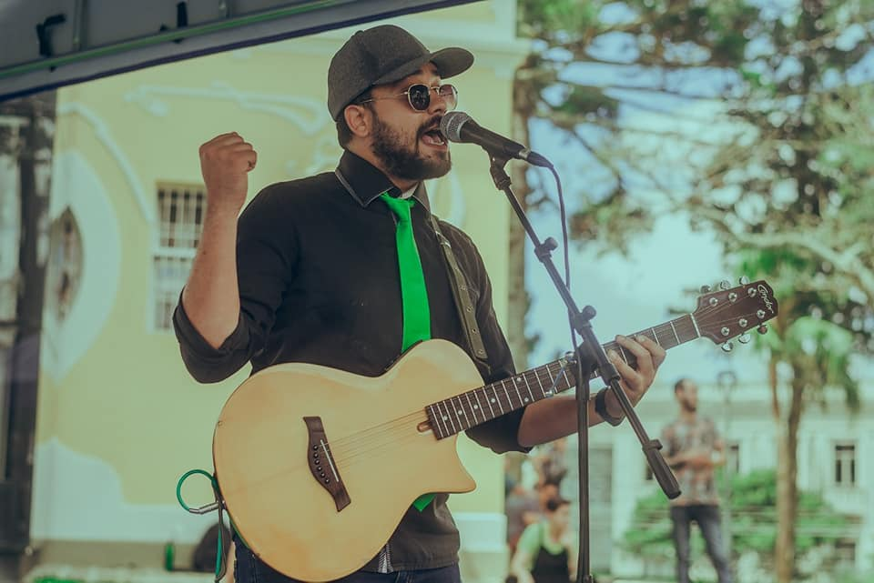
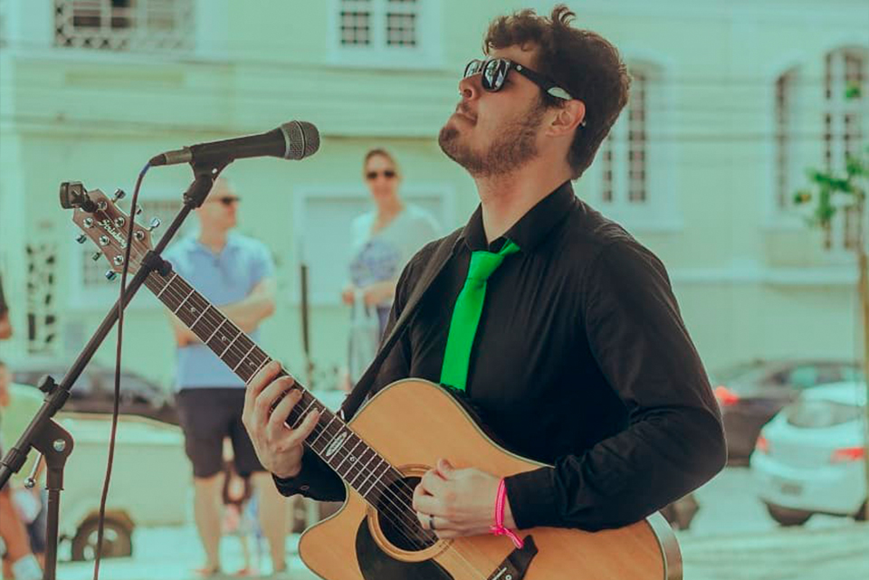

Quem Somos
Carlos Félix
Músico, produtor, empresário e desenvolvedor. Artísta desde pequeno já fez shows em palcos muito importantes e hoje produz outros artistas na busca pela dignidade e pela qualidade de vida de outros artistas
Wilney Dovhepoly

Músico, professor e produtor. Formando em produção músical pela Universidade Federal do Paraná e professor de língua inglesa é o responsavel pelas instruções de inglês para músicos, além de trabalhar ativamente na parte de produção musical e audiovisual dos nossos artistas parceiros